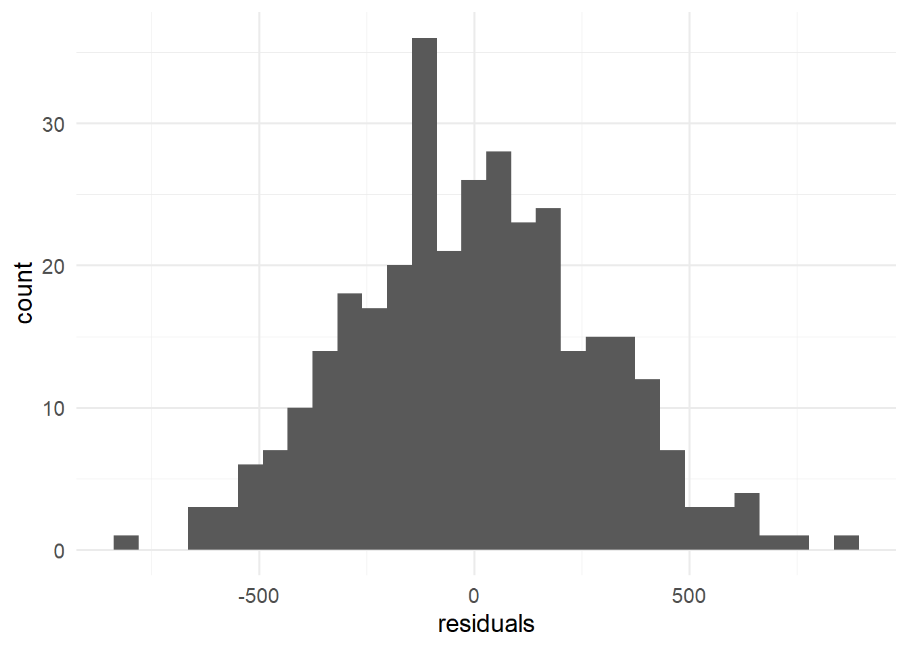

library(tidyverse)
data_penguin<-palmerpenguins::penguins2 Lineare Regression
In diesem Kapitel setzen wir uns mit der einfachen und multiplen linearen Regression auseinander. Lineare Regressionsmodelle sind ein Grundbaustein im Kontext der Regression und des Data-Minings, da die Koeffizienten leicht interpretierbar sind und viele statistische Werkzeuge existieren, um die Sinnhaftigkeit der Modelle und deren Koeffizienten zu überprüfen.
2.1 Der Palmer Penguin Datensatz
Der Datensatz für diese und teilweise auch kommende Übungen ist der sogenannte Palmer Penguins Datensatz. Als Teil der {tidyverse} Library ist der Datensatz bereits vorinstalliert und wir können diesen nach dem Hinzufügen der {tidyverse} Library über den Befehl palmerpenguins::penguins abrufen. Es ist wie immer ratsam, den Datensatz als neue Variable zu speichern:
Das aufrufen der glimpse Funktion gibt wieder einen kompakten Überblick über die verschiedenen Variabeln und Werte, welche diese annehmen.
data_penguin %>% glimpse()Rows: 344
Columns: 8
$ species <fct> Adelie, Adelie, Adelie, Adelie, Adelie, Adelie, Adel…
$ island <fct> Torgersen, Torgersen, Torgersen, Torgersen, Torgerse…
$ bill_length_mm <dbl> 39.1, 39.5, 40.3, NA, 36.7, 39.3, 38.9, 39.2, 34.1, …
$ bill_depth_mm <dbl> 18.7, 17.4, 18.0, NA, 19.3, 20.6, 17.8, 19.6, 18.1, …
$ flipper_length_mm <int> 181, 186, 195, NA, 193, 190, 181, 195, 193, 190, 186…
$ body_mass_g <int> 3750, 3800, 3250, NA, 3450, 3650, 3625, 4675, 3475, …
$ sex <fct> male, female, female, NA, female, male, female, male…
$ year <int> 2007, 2007, 2007, 2007, 2007, 2007, 2007, 2007, 2007…Wie der Name des Datensatzes andeutet, enthält er Informationen über verschiedene Pinguinarten. Konkret umfasst er \(344\) Beobachtungen von drei unterschiedlichen Pinguinarten, die auf verschiedenen Inseln des Palmer-Archipels in der Nähe der Antarktis leben. Die Daten wurden von Dr. Kristen Gorman erhoben und dienen inzwischen als Standardbeispiel für vielfältige Anwendungen in der Datenanalyse.
Neben der Pinguinart (species) und der Beobachtungsinsel (island) sind folgende Messgrößen enthalten: die Schnabellänge in Millimetern (bill_length_mm), die Schnabeltiefe in Millimetern (bill_depth_mm), die Flügellänge in Millimetern (flipper_length_mm), das Körpergewicht in Gramm (body_mass_g) sowie das Geschlecht (sex). Zusätzlich ist das Beobachtungsjahr (year) im Datensatz vorhanden, spielt aber für diese Übung keine wesentliche Rolle.
2.1.1 Deskriptive Statistiken
Die Funktion summary() in R erzeugt beim Aufruf eine deskriptive Zusammenfassung des übergebenen Datensatzes. Für quantitative Variablen werden dabei deskriptive Statistiken wie Minimum, Maximum, Median, arithmetisches Mittel und die Quartile ausgegeben. Bei nominalen oder kategorialen Variablen werden die einzelnen Ausprägungen und deren absolute Häufigkeiten dargestellt. Zusätzlich wird für jede Variable die Anzahl der fehlenden Werte (kodiert als NA) aufgeführt.
summary(data_penguin) species island bill_length_mm bill_depth_mm
Adelie :152 Biscoe :168 Min. :32.10 Min. :13.10
Chinstrap: 68 Dream :124 1st Qu.:39.23 1st Qu.:15.60
Gentoo :124 Torgersen: 52 Median :44.45 Median :17.30
Mean :43.92 Mean :17.15
3rd Qu.:48.50 3rd Qu.:18.70
Max. :59.60 Max. :21.50
NA's :2 NA's :2
flipper_length_mm body_mass_g sex year
Min. :172.0 Min. :2700 female:165 Min. :2007
1st Qu.:190.0 1st Qu.:3550 male :168 1st Qu.:2007
Median :197.0 Median :4050 NA's : 11 Median :2008
Mean :200.9 Mean :4202 Mean :2008
3rd Qu.:213.0 3rd Qu.:4750 3rd Qu.:2009
Max. :231.0 Max. :6300 Max. :2009
NA's :2 NA's :2 Um deskriptive Statistiken für verschiedene Subgruppen metrischer Variablen zu berechnen, bieten sich die in der vorherigen Übung eingeführten Funktionen summarise() und group_by() aus der dplyr-Library an:
data_penguin %>%
na.omit() %>%
group_by(species) %>%
summarise(n = n(),
"1st Qu." = quantile(bill_length_mm, 0.25),
"Median" = median(bill_length_mm),
"Mean" = mean(bill_length_mm),
"3rd Qu." = quantile(bill_length_mm, 0.25),
)| species | n | 1st Qu. | Median | Mean | 3rd Qu. |
|---|---|---|---|---|---|
| Adelie | 146 | 36.725 | 38.85 | 38.82397 | 36.725 |
| Chinstrap | 68 | 46.350 | 49.55 | 48.83382 | 46.350 |
| Gentoo | 119 | 45.350 | 47.40 | 47.56807 | 45.350 |
Wir können diese Statistiken auch grafisch mit einem Boxplot darstellen:
data_penguin %>%
na.omit() %>%
ggplot(aes(x=species,y=bill_length_mm, fill = species))+
geom_boxplot()+
scale_fill_manual(values = c("darkorange","purple","cyan4"))+
labs(
x = "Pinguin Spezies",
y = "Schnabellänge in mm"
)+
theme_minimal(base_size=14)+
theme(
legend.position = "none"
)Im Vergleich zur Visualisierung in Aufgabe 1.10 implementierte die oben dargestellte Grafik folgende Anpassungen:
- Der Parameter
fillin der Funktionaes()weist den grafischen Elementen Füllfarben zu. - Die Funktion
scale_fill_manual()definiert die Füllfarben manuell. Hier setzen wir die Farbwerte (values) aufc("darkorange", "purple", "cyan4"). - Mit der Funktion
labs()und den Argumentenxundypassen wir die Beschriftungen der x- und y-Achse an. - Die Funktion
theme_minimal(base_size = 14)legt unter anderem einen weißen Hintergrund für die Grafik fest und setzt die Basis-Schriftgröße auf14pt. - Die Anweisung
theme(legend.position = "none")unterdrückt die Legende der Grafik, was die Übersichtlichkeit erhöht.
Der bewusste Einsatz von Farben, Formen und Texten in Grafiken vereinfacht das Lesen und Verarbeiten der enthaltenen Informationen maßgeblich. Die effektive visuelle Kommunikation von Daten ist eine essentielle Kompetenz, die man in jedem Berufsfeld, welches Daten involviert beherrschen muss.
2.2 Die einfache lineare Regression
Die lineare Regression erweist sich als ein vergleichsweise einfaches, aber äußerst leistungsstarkes Werkzeug in der Statistik und im Data Mining. Ihre Vorteile umfassen die sehr gute Interpretierbarkeit der Koeffizienten – sowohl hinsichtlich ihrer Werte als auch ihrer statistischen Signifikanz.
In der einfachen linearen Regression besteht das Ziel darin, eine abhängige Variable (auch Zielvariable, Outcome oder Target genannt) \(Y \in \mathbb{R}^K\) durch die Gleichung
\[ Y = b_0 + b_1X + \varepsilon \tag{2.1}\]
zu approximieren. Hierbei ist \(X \in \mathbb{R}^K\) die unabhängige Variable, \(b_0, b_1 \in \mathbb{R}\) die Regressionskoeffizienten (Achsenabschnitt und Steigung) und \(\varepsilon \sim \mathcal{N}(0, 1)\) ein Fehlerterm, der als normalverteilt angenommen wird.
Gleichung Gleichung 2.1 bezeichnen wir auch als einfache lineare Regressionsgleichung oder Modellgleichung. Dabei sind \(X\) und \(Y\) Vektoren der Dimension \(K \in \mathbb{N}\), also \(X = (x_1, ..., x_K)\) und \(Y = (y_1, ..., y_K)\) mit \(x_i\in\mathbb{R}\) und \(y_i\in\mathbb{R}\) für alle \(k=1,...,K\).
Wir können die Regressionsgleichung Gleichung 2.1 komponentnweise betrachten:
\[ y_k = b_0+b_1 x_k + \varepsilon_k, \qquad k=1,...,K \]
\(K\) entspricht hierbei wieder der Anzahl der Observationen.
Beispiel 2.1 Betrachte folgenden synthetischen Datensatz:
| x | y |
|---|---|
| 0 | 0.56 |
| 1 | 0.73 |
| 2 | -0.56 |
| 3 | 1.43 |
| 4 | 1.87 |
| 5 | 0.78 |
| 6 | 2.54 |
| 7 | 4.77 |
| 8 | 4.69 |
| 9 | 4.95 |
| 10 | 3.78 |
Die folgende Grafik zeigt die Daten visualisiert als Punktewolke:
Um nun eine Regressionsgerade mit den Parametern \(\hat{b}_0\) und \(\hat{b}_1\) zu bestimmen, welche die abhängige Variable \(Y\) bestmöglich approximiert, verwenden wir die folgenden Formeln zur Schätzung der Koeffizienten:
\[ \hat b_1 = \frac{\sum_{k=1}^{K} x_k y_k - K \bar{x} \bar{y}}{\sum_{k=1}^{K} x_k^2 - K \bar{x}^2} \qquad \text{und}\qquad \hat b_0 = \bar{y} - \hat{b}_1 \bar{x} \]
Dabei repräsentieren \(\bar{x} = \frac{1}{K}\sum_{k=1}^K x_k\) und \(\bar{y} = \frac{1}{K}\sum_{k=1}^K y_k\) den Stichprobenmittelwert der unabhängigen Variable \(X\) bzw. der abhängigen Variable \(Y\).
Für das vorherige Beispiel ergeben sich die geschätzten Koeffizienten zu \(\hat{b}_1 = 0.4908\) und \(\hat{b}_0 = 0.2253\). Daraus resultiert die geschätzte Regressionsgleichung mit eingesetzten Werten:
\[ \hat{y} =\hat{b}_1x+\hat{b}_0 = 0.5098x - 0.2273 \]
Wir können die Regressionsgerade dann mithilfe der geom_abline Funktion visualisieren:
data_example %>% ggplot(aes(x=x,y=y))+
geom_point(color="darkorange",
size = 3)+
geom_abline(slope = 0.5098,
intercept = -0.2273,
linewidth = 1,
color = "cyan4")+
theme_minimal(base_size=14)In Zeile 4 spezifizieren wir mit dem slope Argument die Steigung, bzw. den Parameter \(\hat{b_1}\) und in Zeile 5 durch das Argument intercept den Schnittpunkt mit der \(y\)-Achse, bzw. den Parameter \(\hat{b_0}\). Die Argumente linewidth und color steuern die Dicke und Farbe der Linie.
Wichtig
Die Notation der Schätzgleichung unterscheidet sich von der Modellgleichung. Bei geschätzten Parametern oder Werten verwendet man die Notation \(\hat{y},\hat{b}_1,\text{ und }\hat{b}_0\) um geschätzte Werte darzustellen.
2.2.1 Schätzung der Modellparameter in R
Um eine lineare Regression mit R durchzuführen, nutzen wir die {tidymodels}-Library. {tidymodels} erweitert das Konzept der {tidyverse}-Bibliothek um statistische Modellierung. Der Prozess zur Spezifikation eines linearen Modells gliedert sich hierbei, unabhängig vom verwendeten Datensatz, in zwei separate Phasen:
- Modellspezifikation
- Schätzung der Modellparameter
Diese Phasen werden durch die Funktionen linear_reg() und fit() spezifiziert. Die Spezifikation des Modells erfolgt stets unabhängig von den zugrundeliegenden Daten:
library(tidymodels)
lm_spec <- linear_reg()Um nun die Modellparameter für die Daten aus Example 2.1 zu schätzen, kombinieren wir die Modellspezifikation mit der fit Funktion:
- In der ersten Zeile deklarieren wir ein neues Objekt namens
lm_fit. Indem wir die zuvor definierte Modellspezifikationlm_specan die Funktionfit()übergeben, weisen wirfit()an, die Parameter für ein lineares Regressionsmodell zu schätzen. - In der zweiten Zeile legen wir mithilfe des Arguments
dataden Datensatz fest, anhand dessen die Modellparameter \(b_0\) und \(b_1\) geschätzt werden sollen. - Nach der Datenspezifikation müssen wir noch die abhängige und die unabhängige Variable definieren. Dies geschieht mithilfe des Operators
~. Die Variable links des~-Operators (y) ist die abhängige Variable, und die Variable rechts des~-Operators (x) ist die unabhängige Variable.
Das Objekt lm_fit enthält nun unter anderem die geschätzten Modellparameter \(b_0\) und \(b_1\). Es existieren verschiedene Wege, um auf diese zuzugreifen:
Durch das Ausgeben des Objekts lm_fit erhalten wir neben den Koeffizienten \(b_0\) (Intercept) und \(b_1\) (x) beispielsweise auch die Formel, die zur Schätzung der Modellparameter verwendet wurde:
lm_fitparsnip model object
Call:
stats::lm(formula = y ~ x, data = data)
Coefficients:
(Intercept) x
-0.2273 0.5098 Eine detaillierte Übersicht der geschätzten Modellparameter und deren statistischer Signifikanz erhalten wir durch folgenden Code-Abschnitt:
lm_fit %>%
extract_fit_engine() %>%
summary()
Call:
stats::lm(formula = y ~ x, data = data)
Residuals:
Min 1Q Median 3Q Max
-1.5418 -0.6913 0.1278 0.6881 1.4285
Coefficients:
Estimate Std. Error t value Pr(>|t|)
(Intercept) -0.2273 0.5768 -0.394 0.702757
x 0.5098 0.0975 5.229 0.000543 ***
---
Signif. codes: 0 '***' 0.001 '**' 0.01 '*' 0.05 '.' 0.1 ' ' 1
Residual standard error: 1.023 on 9 degrees of freedom
Multiple R-squared: 0.7523, Adjusted R-squared: 0.7248
F-statistic: 27.34 on 1 and 9 DF, p-value: 0.0005429Die Funktion extract_fit_engine() ruft das Attribut fit aus dem Objekt lm_fit ab. Das Attribut fit eines linearen Modells beinhaltet neben den geschätzten Parametern zahlreiche weitere Informationen, die die Funktion summary() übersichtlich zusammenfasst. Diese werden wir in den folgenden Abschnitten genauer betrachten.
2.2.1.1 Residuen
Der Abschnitt Residuals der Zusammenfassung beschreibt deskriptive Merkmale der Residuen welche sich durch die Schätzung der Modellparameter ergeben haben.
Wiederholung
Zur Erinnerung: Für eine Observation \((x_i,y_i)\) mit geschätztem Wert \(\hat{y}_i = \hat{b}_1x_i+\hat{b}_0\) ist das Residuum \(\hat{\varepsilon}_i\) als \(\hat{\varepsilon}_i = y_i-\hat{y}_i = y_i - (\hat{b}_1x_i+\hat{b}_0)\) definiert.
...
Residuals:
Min 1Q Median 3Q Max
-1.5418 -0.6913 0.1278 0.6881 1.4285
Residual standard error: 1.023 on 9 degrees of freedom
...Konkret heißt das für das obige lineare Modell, dass zum Beispiel das kleinste Residuum den Wert \(-1.5418\) annimmt und \(75\%\) der Residuen maximal den Wert \(0.6881\) besitzen.
Neben den deskriptiven Merkmalen wird im unteren Teil der Ausgabe auch noch der Standardfehler der Residuen angegeben.
Die geschätzten Residuen für das geschätzte Modell können auch grafisch dargestellt werden:
estimates <- lm_fit %>%
predict(data_example) %>%
pluck(1)
data_example %>% ggplot(aes(x=x,y=y))+
geom_segment(aes(x=x,xend=x,y=y,yend=estimates),
linewidth = 1,
linetype = 2,
color = "darkorange")+
geom_point(color="darkorange",
size = 3)+
geom_abline(slope = 0.5092,
intercept = -0.2253,
linewidth = 1,
color = "cyan4")+
theme_minimal(base_size=14)Zuerst haben wir mithilfe der Funktion predict() die vorhergesagten Werte \(\hat{y} = \hat{b}_0 + x\hat{b}_1\) berechnet. Da predict() ein Dataframe oder Tibble zurückgibt, können wir die relevante Spalte mit purrr::pluck() als Vektor extrahieren.
Im Vergleich zur vorherigen Visualisierung stellen wir die Residuen nun mit der Funktion geom_segment() dar. geom_segment() zeichnet gerade Linien zwischen den Punkten (x, y) und (xend, yend), wobei die Werte im Datensatz und die vorhergesagten Werte in der Liste estimates diese Endpunkte definieren. Um die Residuallinien hervorzuheben, haben wir ihre Breite (linewidth) angepasst, den Linientyp (linetype) auf “gestrichelt” gesetzt und ihre Farbe (color) an die entsprechenden Datenpunkte angeglichen.
2.2.1.2 Koeffizienten
Der Coefficients Abschnitt beschreibt die geschätzten Parameter und deren statistische Signifikanz.
...
Coefficients:
Estimate Std. Error t value Pr(>|t|)
(Intercept) -0.2273 0.5768 -0.394 0.702757
x 0.5098 0.0975 5.229 0.000543 ***
...- Die Spalte
Estimategibt hierbei den geschätzten Wert für \(b_0\) und \(b_1\) an. - Die Spalte
Std. Errorgibt für jeden geschätzten Parameter den Standardfehler an. - Die Spalte
t valuegibt den Wert der \(t\)-Statistik für den entsprechenden Parameter an. - Die Spalte
Pr(>|t|)beschreibt den \(p\)-Wert des zugrundeliegenden \(t\)-Tests.
Zusätzlich werden rechts von der letzten Spalte noch Signifikanzcodes wiedergegeben:
...
Signif. codes: 0 '***' 0.001 '**' 0.01 '*' 0.05 '.' 0.1 ' ' 1
...Diese beschreiben zu welchem Signifikanzniveau \(\alpha\) ein Parameter Signifikant ist. Falls also zum Beispiel bei der Variable x der Signifikanzcode '***' gegegben ist, dann bedeutet das, dass \(0<p< 0.001\).
Wiederholung
Der \(t\)-Test für den Koeffizienten \(b\) eine Variable \(x\) einer linearen Regression lautet:
\[ H_0:\: b=0\qquad \text{vs.}\qquad H_1:\:b\neq 0 \] Der Wert der \(t\)-Statistik ist durch \(\frac{\hat{b}}{\text{sd}_{\hat{b}}}\sqrt{K}\) gegeben, wobei \(\text{sd}_{\hat{b}}\) den Standardfehler von \(\hat{b}\) und \(K\) die Anzahl der Observationen beschreibt. Falls der Wert der \(t\)-Statistik im Bereich \(B = (-\infty,-x_{1-\frac{\alpha}{2}})\cup(x_{1-\frac{\alpha}{2}},\infty)\) liegt, dann können wir \(H_0\) verwerfen. Hierbei verwenden wir die Approximation \(x_{1-\frac{\alpha}{2}}\approx z_{1-\frac{\alpha}{2}}\), wobei \(z_{1-\frac{\alpha}{2}}\) das \(1-\frac{\alpha}{2}\) Quantil der Standardnormalverteilung ist.
Falls wir \(H_0\) nicht verwerfen (z.B. zum Niveau \(\alpha = 0.001\)), können wir nicht mit ausreichender Sicherheit sagen, dass \(\hat{b}\neq 0\) und der Parameter somit einen Einfluss auf die abhängige Variable \(y\) hat.
2.2.2 Das Gütemaß \(R^2\)
Neben den Parametern, deren Signifikanz und den Residuen sind wir ebenso an dem Gütemaß \(R^2\) interessiert. Das Gütemaß \(R^2\) beschreibt in Worten gefasst, wie viel Prozent der Varianz der Daten wir durch unser Modell erklären können.
...
Multiple R-squared: 0.7523, Adjusted R-squared: 0.7248
...Falls also, wie im obigen Output zu sehen ist, der \(R^2\) des Modells bei \(0.7526\) liegt, kann unser Modell ca. \(75\%\) der Varianz in den Daten erklären.
Um das Gütemaß zu berechnen wird folgende Formel herangezogen:
\[ R^2 = \frac{\sum_{k=1}^K(\hat{y}_k-\bar{y})^2}{\sum_{k=1}^K(y_k-\bar{y})^2} \tag{2.2}\]
2.2.2.1 Der \(F\)-Test
Die letzet Zeile der Zusammenfassung des Modells zeigt die \(F\)-Statistik mit korrespondierendem \(p\)-Wert.
...
F-statistic: 27.34 on 1 and 9 DF, p-value: 0.0005429
...Der \(F\)-Test beschreibt, ob das Modell als gesamtes signifikant ist. Die Zugrundeliegenden Hypothesen des \(F\)-Tests sind:
\[ H_0:\: b_i = 0 \text{ für alle } i,\qquad\text{ vs }\qquad H_1:\: b_i\neq 0 \text{ für mindestens ein } i\]
Falls wir \(H_0\) nicht verwerfen, können wir nicht mit hoher Sicherheit sagen, dass alle Regressoren keinen Einfluss auf die abhängige Variable haben. Im Kontext der einfachen linearen Regression sind der \(F\)-Test und \(t\)-Test insofern äquivalent, dass
\[ \verb|F-statistic| = (\verb|t value|)^2 \]
2.3 Die multiple lineare Regression
Die Multiple lineare Regression erweitert die Idee der einfachen linearen Regression durch das Hinzufügen von weiteren erklärenden Variablen.
Die Modellgleichung lautet somit
\[ Y = b_0 + b_1X_1+...+b_JX_J+\varepsilon, \]
falls die Daten aus \(J\) verschiednen Variablen bestehen. Hierbei gilt wieder, dass für jede Variable \(X_j,\:j=1,...,J\) \(K\) Observationen vorhanden sind. Man geht hierbei davon aus, dass die \(K\) Observationen zufällig von einer Gesamtpopulation gezogen wurden.
Somit kann die Modellgleichung auch wieder komponentenweise beschrieben werden:
\[ y_k = b_0 + b_1x_{k1}+...+b_Jx_{kJ}+\varepsilon_k \]
Zusätzlich kann die Modellgleichung auch in Matrixnotation dargestellt werden:
\[ Y = Xb+\varepsilon \tag{2.3}\]
Wobei \(Y = (y_1,...,y_k)^\prime\in\mathbb{R}^{K\times 1},\, X = (1,x_1,...,x_J)\in\mathbb{R}^{K\times (J+1)}, b = (b_0,b_1,...,b_J)^\prime\in\mathbb{R}^{(J+1)\times 1}\) und \(\varepsilon \sim \mathcal{N(0,1)}\).
Das Schätzen der Modellparameter \(b_0,...,b_J\) auf Basis gegebener Observationen wird bei der multiplen linearen Regression üblicherweise nicht mehr von Hand durchgeführt. Der einfachste Weg die Modellparameter von Hand zu bestimmen ist allerdings durch folgende Formel gegeben:
\[ b = (X^\prime X)^{-1}X^\prime Y \tag{2.4}\]
Wobei \(X^\prime\) die transponierte Matrix von \(X\) darstellt und \((X^\prime X)^{-1}\) die inverse von \((X^\prime X)\). Die Komplexität in der Berechnung von \(b\) anhand Gleichung 2.4 liegt in der Berechnung der inversen Matrix.
2.3.1 Multiple lineare Regression in R
Das schätzen der Modellparameter im multidimensionalen Fall in R funktioniert fast analog wie im einfachen Fall.
Als Beispiel verwenden wir hierfür nun keinen syntetischen Datensatz mehr, sondern den data_penguin Datensatz aus Section 2.1.
Angenommen die abhängige Veriable ist das Gewicht der Pinguine (body_mass_g). Wie im einfachen linearen Regressionsmodell wird zuerst das Modell durch die linear_reg Funktion spezifiziert. Nach der Spezifikation werden dann die Parameter mithilfe der fit Funktion geschätzt. Das Argument formula hat rechts des ~ Operators einen Punkt stehen. Der . Operator signalisiert, dass alle verbleibenden Variablen als unabhängige Variablen verwendet werden sollen.
mlr_spec <- linear_reg()
mlr_fit <- mlr_spec %>%
fit(data = data_penguin,
formula = body_mass_g ~.)Alternativ kann man statt des . auch alle Variablen wie folgt ausschreiben, wobei das in den meisten Fällen aufgrund schlechter Lesbarkeit nicht zu empfehlen ist:
mlr_fit <- mlr_spec %>%
fit(data = data_penguin,
formula = body_mass_g ~ species + island + bill_length_mm +
bill_depth_mm + flipper_length_mm + sex + year)Analog zum eindimensionalen Fall kann mit den extract_fit_engine und summary Funktion eine Zusammenfassung erzeugt werden:
mlr_fit_summary <- mlr_fit %>%
extract_fit_engine() %>%
summary()
mlr_fit_summary
Call:
stats::lm(formula = body_mass_g ~ species + island + bill_length_mm +
bill_depth_mm + flipper_length_mm + sex + year, data = data)
Residuals:
Min 1Q Median 3Q Max
-809.70 -180.87 -6.25 176.76 864.22
Coefficients:
Estimate Std. Error t value Pr(>|t|)
(Intercept) 84087.945 41912.019 2.006 0.04566 *
speciesChinstrap -282.539 88.790 -3.182 0.00160 **
speciesGentoo 890.958 144.563 6.163 2.12e-09 ***
islandDream -21.180 58.390 -0.363 0.71704
islandTorgersen -58.777 60.852 -0.966 0.33482
bill_length_mm 18.964 7.112 2.667 0.00805 **
bill_depth_mm 60.798 20.002 3.040 0.00256 **
flipper_length_mm 18.504 3.128 5.915 8.46e-09 ***
sexmale 378.977 48.074 7.883 4.95e-14 ***
year -42.785 20.949 -2.042 0.04194 *
---
Signif. codes: 0 '***' 0.001 '**' 0.01 '*' 0.05 '.' 0.1 ' ' 1
Residual standard error: 286.5 on 323 degrees of freedom
(11 Beobachtungen als fehlend gelöscht)
Multiple R-squared: 0.8768, Adjusted R-squared: 0.8734
F-statistic: 255.4 on 9 and 323 DF, p-value: < 2.2e-16Die Modellgleichung für das multiple lineare Regressionsmodell mit eingesetzten Zahlen lautet also
\[ \begin{aligned} \verb|body_mass_g|_i = 84087.945 &+\verb|speciesChinstrap|_i\cdot-282.53+\\ &\verb|speciesGentoo|_i\cdot890.958+ \verb|islandDream|_i\cdot-21.180+\\ &\verb|islandTorgersen|_i\cdot-58.777 + \verb|bill_length_mm|_i\cdot18.964+ \\ &\verb|bill_depth_mm|_i\cdot60.798 + \verb|flipper_length_mm|_i\cdot18.504+\\ &\verb|sexmale|_i\cdot378.977+\verb|year|_i\cdot-42.785+\varepsilon_i \end{aligned} \tag{2.5}\]
2.3.2 Interpretation und Verlgeich der Koeffizienten
Die geschätzten Koeffizienten im MLR Modell lassen sich ähnlich wie bei der einfachen linearen Regression interpretieren da der Effekt der Koeffizienten auch linear ist.
So erwarten wir zum Beispiel im obigen Beispiel, dass das Gewicht eines Pinguins in Schnitt um 18.504\(g\) steigt, falls sich die Länge der Flossen um 1mm erhöht (\(b_{\verb|flipper_length_mm|} = 18.504\)) und alle anderen Einflussfaktoren konstant bleiben.
Neben dem direkten Einfluss der geschätzten Koeffizienten, können wir zwar die statistische Signifikanz der verschiednen Parameter vergleichen, aber es ist ohne Weiteres nicht klar, welcher Koeffizient den größten Einfluss auf das Gewicht der Pinguine hat.
Um herauszufinden, welche Variable den größten Einfluss besitzt, müssen wir entweder die Variablen, oder die Koeffizienten standardisieren. Ohne einer Standardisierung wäre ein Vergleich der geschätzten Koeffizienten nicht sinnvoll, da die Variablen teilweise anderen Einheiten gemessen werden oder gar nicht metrisch sind. So macht zum Beispiel ein Vergleich der Parameter für die Schnabellänge und Geschlecht keinen Sinn, da die Schnabellänge in \(mm\) gemesser wird und das Geschlecht nur die Ausprägungen "male" und "female" besitzt. Den standardisierten Koeffizient für eine Variable \(x\) können wir mithilfe der Formel
\[ \hat{b}_{x,\text{std}} = \hat{b}_x\frac{\text{sd}_x}{\text{sd}_y} \] berechnen, wobei \(\text{sd}_x\) für die Standardabweichung von \(x\) und \(\text{sd}_y\) für die Standardabweichung von \(y\) steht.
Durch die Standardisierung erreichen wir, dass die standardisierten Koeffizienten vergleichbar sind. Der geschätzte Koeffizient mit dem größten standardisierten Wert hat dadurch den größten Einfluss auf die abhängige Variable, während der Koeffizient mit dem kleinsten standardisierten Wert den kleinsten Einfluss hat.
Durch die lm.beta::lm.beta() Funktion können wir die standardisierten Koeffizienten für ein lineares Modell in R bestimmen:
mlr_fit %>%
extract_fit_engine() %>%
lm.beta::lm.beta() %>%
summary()
Call:
stats::lm(formula = body_mass_g ~ species + island + bill_length_mm +
bill_depth_mm + flipper_length_mm + sex + year, data = data)
Residuals:
Min 1Q Median 3Q Max
-809.70 -180.87 -6.25 176.76 864.22
Coefficients:
Estimate Standardized Std. Error t value Pr(>|t|)
(Intercept) 8.409e+04 NA 4.191e+04 2.006 0.04566 *
speciesChinstrap -2.825e+02 -1.417e-01 8.879e+01 -3.182 0.00160 **
speciesGentoo 8.910e+02 5.311e-01 1.446e+02 6.163 2.12e-09 ***
islandDream -2.118e+01 -1.271e-02 5.839e+01 -0.363 0.71704
islandTorgersen -5.878e+01 -2.545e-02 6.085e+01 -0.966 0.33482
bill_length_mm 1.896e+01 1.288e-01 7.112e+00 2.667 0.00805 **
bill_depth_mm 6.080e+01 1.487e-01 2.000e+01 3.040 0.00256 **
flipper_length_mm 1.850e+01 3.221e-01 3.128e+00 5.915 8.46e-09 ***
sexmale 3.790e+02 2.357e-01 4.807e+01 7.883 4.95e-14 ***
year -4.278e+01 -4.320e-02 2.095e+01 -2.042 0.04194 *
---
Signif. codes: 0 '***' 0.001 '**' 0.01 '*' 0.05 '.' 0.1 ' ' 1
Residual standard error: 286.5 on 323 degrees of freedom
(11 Beobachtungen als fehlend gelöscht)
Multiple R-squared: 0.8768, Adjusted R-squared: 0.8734
F-statistic: 255.4 on 9 and 323 DF, p-value: < 2.2e-16Im obigen Code haben wir nach der Erzeugung der standardisierten Koeffizienten auch noch die summary() Funktion aufgerufen, um die neben den standardisierten Koeffizienten auch noch eine Übersicht über die restlichen Parameter und Statistiken zu bekommen.
2.3.2.1 Dummy Encoding
Beim Vergleichen der unabhängigen Variablen mit dem R Output werden zum Beispiel statt species die beiden neuen Variablen speciesChinstrap und speciesGentoo verwendet. Das liegt daran, dass diese Variable nominal ist (Ausprägungen "Chinstrap","Gentoo" und "Adelie") und die Ausprägungen deshalb nicht einfach mit geschätzten Koeffizienten multipliziert werden können wie das im ordinalen oder metrischen Fall ist. Deshalb werden sogenannte Dummy-Variablen zur berechnung der Parameter verwendet. Hierbei werden im Falle der Variable species \(l-1 = 3-1 = 2\) (mit \(l\) die Anzahl der verschiedenen Ausprägungen) neue Variablen angelegt. speciesChinstrap nimmt den Wert 1 an, falls ein Datenpunkt im Datensatz der Spezies Chinstrap angehört und ansonsten 0. Gleich wird auch mit speciesGentoo verfahren. Allerdings ist hier nirgends die Variable speciesAdelie spezifiziert! Das liegt daran, dass der Einfluss dieses Datenpunktes durch den Intercept, also \(b_0\) abgebildet wird um Multikollinearität zu vermeiden (siehe Abschnitt Section 2.3.3.5).
Das gleiche Vorgehen wurde auch bei den Variablen island und sex verwendet.
2.3.3 Modellannahmen
Unter welchen Voraussetzungen macht es Sinn ein lineares Modell zu verwenden und wie wird geprüft, ob diese erfüllt sind?
Der Hintergrund dieser Voraussetzungen liegt im sogenannten Gauss-Markov Theorem:
Theorem 2.1 (Gauss-Markov) Gegeben sei ein lineares Modell wie in Gleichung 2.3 mit unbekannten Parameter \(b = (b_0,..., b_J)\). Angenommen es gilt \(\varepsilon \sim \mathcal{N}(0,\Sigma)\) mit \(\Sigma = \sigma^2 I_J\in\mathbb{R}^{J\times J}\), wobei \(I_J\) eine \(J\)-dimensionale Einheitsmatrix ist und \(\sigma^2>0\). Wenn zusätzlich die Matrix \(X^\prime X\) invertierbar ist, dann gilt:
Der Kleinste-Quadrate-Schätzer für den wahren Parametervektor \(b\), gegeben durch Gleichung 2.4 ist ein minimalvarianter linearer erwartungstreuer Schätzer für den wahren Parameter \(b\).
Einfach gesagt bedeutet das:
Falls die einzelnen Störgrößen \(\varepsilon_i,\: i=1,...,J\) normalverteilt sind mit Erwartungswert \(0\) und Varianz \(\sigma^2>0\) und zusätzlich die Variablen \(X_1,...,X_J\) linear unabhängig voneinander sind, dann erwarten wir, dass der Schätzer \(\hat{b}\) im Mittel dem wahren Parameter entspricht und es keinen anderen erwartungstreuen Schätzer \(\tilde{\hat{b}}\) gibt, welcher eine bessere Modellgüte liefert.
Aus diesen Aussagen lassen sich folgende Bedingungen herleiten:
- Die Beziehung zwischen den unabhängigen und der abhängigen Variable muss tatsächlich linear sein.
- Die Varianz der Residuen muss konstant sein (Homoskedastizität).
- Die Residuen sind unabhängig (keine Autokorrelation).
- Die Residuen sind normalverteilt.
2.3.3.1 Lineare Beziehung
Eine grundlegende Bedingung ist, dass die Beziehung zwischen der abhängigen Variable und den (metrischen) erklärenden Variablen tatsächlich linear ist. Falls diese Bedingung nicht erfüllt ist, können die Effekte der verschiedenen unabhängigen Variablen nicht richtig interpretiert werden. Um zu prüfen, ob diese erfüllt ist, können die paarweise Punktewolken zwischen der abhängigen und den unabhängigen Variablen betrachtet werden.
Das folgende Code Snippet erzeugt drei Punktwolken welche jeweils auf der x-Achse die abhängige Variable body_mass_g und auf der y-Achse die metrischen unabhängigen Variablen abbilden.
data_penguin %>%
select(ends_with("mm"),body_mass_g) %>%
na.omit() %>%
pivot_longer(-body_mass_g) %>%
ggplot(aes(y=value,x=body_mass_g))+
geom_point()+
facet_grid(rows = vars(name) ,scales = "free")+
theme_minimal(base_size = 10)In den ersten vier Zeilen wird der Datensatz für die Darstellung aufbereitet:
In Zeile 2 werden mithilfe der
selectundends_withFunktion alle Variabken des Datensatzesdata_penguinausgewählt, deren Name entweder mit"mm"endet, oderbody_mass_gist. Durch diese Zeile werden alle metrischen Werte ausgewählt.In Zeile 3 werden alle Einträge entfernt, welche fehlende Werte beinhalten.
Die
pivot_longerFunktion Wandelt die übergebenen Daten in eine verlängerte Version um, welche weniger Spalten, aber mehr Zeilen enthält:# A tibble: 6 × 3 body_mass_g name value <int> <chr> <dbl> 1 3750 bill_length_mm 39.1 2 3750 bill_depth_mm 18.7 3 3750 flipper_length_mm 181 4 3800 bill_length_mm 39.5 5 3800 bill_depth_mm 17.4 6 3800 flipper_length_mm 186Durch das spezifizieren von
-body_mass_gwird erreicht, dass alle Variablen außerbody_mass_gin zwei Spaltennameundvaluezusammengefasst werden. Der verlängerte Datensatz enthält also nur noch die drei Spaltenbody_mass_g,nameundvalue. In der Variablenamesind die urpsrünglichen Variablennamen gespeichert und invalueder dazugehörige Wert. Dieses Vorgehen erlaubt im nächsten Schritt das Erzeugen von mehreren Plots in Kombination mit derfacet_gridFunktion.Die
facet_gridFunktion erzeugt eine Matrix von Plots wobei durch das Argumentrows = vars(name)spezifiziert wird, dass die Ausprägungen der Variablenamesdie Zeilen der Plot Matrix abbilden sollen.
An der obigen Grafik lässt sich ablesen, dass der Zusammenhang zwischen den unabhängigen Variablen und body_mass_g linear ist, da ein linearer Trend erkennbar ist. Selbst bei der Variable bill_depth_mm, in welcher zwei distinkte Gruppen erkennbar sind, lässt sich jeweils ein linearen Trend feststellen.
2.3.3.2 Konstante Varianz der Residuen
Um die Residuen auf konstante Varianz zu prüfen, verwenden wir ähnlich wie im vorherigen Abschnitt ein visuelles Hilfsmittel: Indem wir die Residuen in Abähngigkeit der Vorhersagewerte als Punktewolke darstellen, können wir die Streuung um den Urpsrung betrachten.
In der obigen Grafik ist die Varianz der Residuen vermutlich konstant.
Begründung: Obwohl unter den Vorhersagewerten preds in den Bereichen [3750,4250] und [5250,5500] Punkte zu erkennen sind, welche als Ausreißer interpretieren werden könnten, sind die restlichen Punkte eher gleichmäßig um den Ursprung verteilt. Gegeben dieser Observation können wir die Vermutung rechtfertigen, dass die Streuung der Residuen konstant ist.
Um eine Grafik wie die obige zu erzeugen müssen wir zuerst die Residuen und dann die Vorhersagen erzeugen.
Die Residuen können wir ähnlich wie die Zusammenfassung der Modellparameter erzeugen indem wir zuerst das fit Attribut des Modells aus dem Objekt mlr_fit mithilfe der extract_fit_engine Funktion extrahieren. Nach der Extraktion können wir dann mit der residuals Funktion die Residuen auslesen.
resid<-mlr_fit %>%
extract_fit_engine() %>%
residuals()Ein ähnliches Vorgehen können wir auch bei den Vorhersagen anwenden. Allerdings müssen wir die Vorhersagen erst mithilfe der predict Funktion erzeugen. Um Vorhersagen für alle Observationen zu erhalten reicht es, den gesamten Datensatz als Argument zu übergeben. Durch die na.omit Funktion werden dann noch alle Fehlenden Werte entfernt.
preds <- mlr_fit %>%
extract_fit_engine() %>%
predict(data_penguin) %>%
na.omit()Nach dem erzeugen der Residuen und der Vorhersagewerte können wir diese in einem neuen Datensatz speichern und direkt an die ggplot Funktion übergeben:
tibble(
predictions = preds,
residuals = resid
) %>%
ggplot(aes(x=preds,y=resid))+
geom_point()+
theme_minimal(base_size=14)Neben den Residuen ist es manchmal auch sinnvoll die Quadratwurzel des Betrags der standardisierten Residuen zu betrachten.
Die geschätzten Residuen \(\hat\varepsilon = \hat{y}-y\) werden standardisiert indem man durch eine empirische Standardabweichung teilt.
So ergibt sich
\[ \hat{\varepsilon}_{\text{std}} = \frac{\hat{\varepsilon}}{\text{sd}_{\hat\varepsilon}} \]
Die empirische Standardabweichung wird hierbei durch den Term
\[ \text{sd}_{\hat{\varepsilon}} = \hat{\sigma}\sqrt{(K-1)/K} \] mit
\[ \hat{\sigma}^2 = \frac{1}{K-J}\sum_{k=1}^K\hat{\varepsilon}^2_k \] geschätzt.
Die Motivation für standardisierte Residuen ist, dass, obwohl unser Modell Homoskedastizität mit einem i.i.d.-Fehlerterm mit fester Varianz \(\varepsilon_k\sim \mathcal{N}(0,1)\) annimmt, die Verteilung der Residuen \(\varepsilon_k\) nicht i.i.d. sein kann, da die Summe der Residuen immer genau Null ist.
Einfach gesagt bedeutet das: Beim darstellen der nicht-standardisierten Residuen sind die Abweichungen schwieriger zu erkennen.
Folgendes Beispiel illustriet diesesn Effekt:
Falls die Daten in der rechten Spalte ebenso homoskedastisch wären, müsste die Trendlinie in der letzten Grafik auch horizontal sein. Anhand der anderen beiden Plots lässt sich kaum erkennen, ob Heteroskedastie vorliegt.
Im Beispiel des Pinguin Datensatzes sieht die Darstellung der Residuen wie folgt aus:
In den Residuen wird ein kleiner Abwärtstrend sichtbar, welcher allerdings so gering ist, dass für das gegebene Modell keine Heteroskedastie vermutet werden sollte.
Die obige Grafik wurde durch folgenden Code erzeugt:
Ähnlich wie bei der vorherigen Grafik wurde mithilfe von ggplot eine Punktewolke durch die Residuen und Vorhersagen erzeugt. Der Unterschied liegt hierbei in den Zeilen 3, 7 und 11.
In Zeile
3wurde wurde nicht dieresiduals()Funktion verwendet, sondern dierstudent. Diese erzeugt die standardisierten Residuen wie sie im vorherigen Abschnitt beschrieben wurden.In Zeile
7wird die Quadratwurzel des Betrags der standardisierten Residuen durch die Funktionensqrt()undabs()berechnet.In Zeile
11wird mithilfe dergeom_smoothFunktion eine Trendlinie hinzugefügt. Das Argumentmethod = "lm"sorgt dafür, dass die Trendlinie linear ist. Durchformula = y~xwird die Formel der Trendlinie spezifiziert. Die Notation mityundxbezieht sich hierbei auf die Variablenyundxwelche in den Aesthetics in Zeile9übergeben wurden. Das Argumentse=FALSEsteuert, dass keine Konfidenzstreifen um die Trendlinien hinzugefügt werden.
2.3.3.3 Autokorrelation
Um zu überprüfen, ob die Residuen unabhängig von einander sind, kann man ebenso als visuelles Hilfsmittel eine Punktewolke wie bei der Überprüfung der Homoskedastizitätsannahme erstellen.
In der obigen Grafik überprüfen wir allerdings nicht nur, ob die Trendlinie horizontal ist, sondern ob diese linear ist. Beim erzeugen der Trendlinie wurde nämlich nicht wie zuvor method = "lm" verwendet, sondern method = "loess". "loess" steht in diesem Kontext für locally estimated scatterplot smoothing. Wichtig hierbei ist lediglich zu wissen, dass ein LOESS Model auch nichtlineare Zusammenhänge zwischen der abhängigen und den unabhängigen Varoablen abbilden kann.
Die Trendlinie in der obigen Grafik ist leicht nichtlinear, folgt allerdings keinem erkennbaren Trend, so dass wir hier eine leichte Korrelation der Residuen unterstellen können.
2.3.3.4 Normalität der Residuen
Die letzte Annahme des Gauss–Markov Theorems lässt sich durch verschiedene visuelle Hilfsmittel überprüfen.
2.3.3.4.1 QQ-Plots
Häufig wird ein sogenannter QQ-Plot (Quantil-Quantil-Plot) verwendet, um zu überprüfen, ob die Unterliegende Verteilung einer Normalverteilung entspricht. Hierbei werden den empirischen Quantilen (die der unterliegenden Residuen) den theoretischen Quantilen gegenübergestellt. Falls die Punkte hierbei sehr nah an der erzeugten Geraden liegen, so geht man davon aus, dass die Quantile der empirischen Verteilung gleich der Normalverteilung sind und somit die Residuen ebenso normalverteilt sind.
resid <- mlr_fit %>%
extract_fit_engine() %>%
residuals() %>%
tibble(residuals = .)
resid %>% ggplot(aes(sample=residuals))+
geom_qq()+
geom_qq_line()+
theme_minimal(base_size=14)Da die empirischen Quantile der Residuen relativ nah an der erzeugten Geraden liegen, kann man davon ausgehen, dass diese normalverteilt sind.
Um die obige Grafik zu erzeugen werden wieder zuerst die Residuen in den Code Zeilen 1-4 erzeugt. Hierbei werden die Residuen allerdings in einem Tibble bzw. Data Frame gespeichert, da der Rückgabewert der residuals() Funktion den Datentyp <dbl> besitzt . Die ggplot Funktion setzt allerdings voraus, dass die Daten als Data Frame oder Tibble übergeben werden. Das Argument residuals = . sorgt dafür, dass im Tibble eine neue Spalte residuals erzeugt wird welche als Werte den Output der residuals() Funktion übergeben bekommt.
Um dann den QQ-Plot zu erzeugen muss man in den Aestethics der ggplot Funktion das Argument sample setzen (anstatt x und y wie gewohnt). Nachdem das Sample auf residuals gesetzt wurde, können dann mithilfe der geom_qq() und geom_qq_line() Funktion die Punkte und die Gerade erzeugt werden.
Wiederholung
Um für eine gegebene Stichprobe \(x_1,...,x_K\) die empirischen Quantile zu berechnen, wird die Stichprobe zuerst sortiert (Ordnungsstatistik). Die sortierte Stichprobe wird durch die Notation \(x_{(1)},...,x_{(K)}\) mit \(x_{(1)}\leq x_{(2)}\leq...x_{(K)}\) dargestellt. Für \(p\in(0.1)\) ist dann das empirische \(p\)-Quantil definiert als
\[ \tilde x_p = \begin{cases} x_{(\lfloor K\cdot p\rfloor+1)} \quad \text{für }K\cdot p\notin\mathbb{Z}\\ \frac{x_{(K\cdot p)}+x_{(K\cdot p+1)}}{2}\text{für }K\cdot p\in\mathbb{Z}\\ \end{cases} \]
2.3.3.4.2 Vergleich der Histogramme mit der Dichte einer Normalverteilung
Neben den Quantilen bietet sich auch die Betrachtung des Histogramms der Residuen an:
resid %>%
ggplot(aes(x=residuals))+
geom_histogram()+
theme_minimal(base_size = 14)`stat_bin()` using `bins = 30`. Pick better value with `binwidth`.
Um das Histogramm, welches durch die geom_histogram Funktion erzeugt wurde mit der Dichte einer Normalverteilung vergleichen zu können, müssen wir zuerst die die y-Achse so anpassen, dass diese nicht mehr die absoluten Häufigkeiten, sondern die relativen Häufigkeiten darstellt. Durch das setzen von y=after_stat(density) in den Aesthetics der geom_histogram Ebene wird dies erreicht.
resid %>%
ggplot(aes(x=residuals))+
geom_histogram(aes(y= after_stat(density)))+
theme_minimal(base_size = 14)Nach dem festlegen der DArstellung der Häufigkeit kann als nächstes die Dichte einer Normalverteilung hinzugefügt werden. Die stat_function() Funktion erleichter das Hinzufügen der Dichte einer Normalverteilung um ein vielfaches, da hier vorerst nur das Argument fun=dnorm übergeben werden muss.
resid %>%
ggplot(aes(x=residuals))+
geom_histogram(aes(y= after_stat(density)))+
stat_function(fun = dnorm, color = "red", linewidth = 1.5)+
theme_minimal(base_size = 14)Problematisch ist allerdings, dass die Dichte einer Standardnormalverteilung (\(\mathcal{N}(0,1)\)) abgebildet wird, für welche gilt \(f(x)\approx 0,\: |x|>4\). Die rote Linie in der obigen Grafik stellt die Dichte der Standardnormalverteilung dar. Für das Histogramm gilt allerdings, dass selbst für \(|\verb|residuals|| > 500\) noch Observationen erkennbar sind. Es müssen also entweder die Werte der Residuen skaliert werden, oder die Parameter der Normalverteilung angepasst werden. Um die Parameter der Normalverteilung anzupassen, verwendet man das args Argument. Die Funktion dnorm besitzt die Argumente mean und sd, was für den Mittelwert und die Standardabweichung der Normalverteilung steht. Indem man das Argument mean auf den Mittelwert der Residuen und sd auf die Standardabweichung der Residuen setzt, sollte sich also die Dichte einer Normalverteilung erzeugen lassen, welche wir mit dem Histogramm vergleichen können!
Um die beiden Argumente mean und sd zu übergeben, kann man diese zuerst separat berechnen und dann als Liste list(mean = ..., sd = ...) übergeben:
mean_res <- mlr_fit %>%
extract_fit_engine()%>%
residuals() %>%
mean()
sd_res <- mlr_fit %>%
extract_fit_engine()%>%
residuals() %>%
sd()
resid %>%
ggplot(aes(x=residuals))+
geom_histogram(aes(y= after_stat(density)))+
stat_function(fun = dnorm,
color = "red",
linewidth = 1.5,
args = list(mean = mean_res,
sd = sd_res))+
theme_minimal(base_size = 14)Wie an der obigen Grafik zu erkennen ist, passt die dargestellte Dichte gut zu dem erzeugtem Histogramm. Wir können also auch daraus schließen, dass die Residuen vermutlich normalverteilt sind.
2.3.3.5 Multikollinearität
Eine weitere Bedingung welche zwar nicht durch das Gauss–Markov Theorem vorausgesetzt wird, aber trotzdem wichtig ist, ist die der nichtvorhandenen Multikollinearität der erklärenden Variablen.
Multikollinearität ist wie folgt definiert:
Falls für einen Datensatz mit erklärenden Variablen \(X_1,...,X_J\in\mathbb{R}^K\) eine Teilmenge \(X_i,X_{i+1},...,X_j\) mit \(1\leq i<j+1\leq J\) existiert, so dass
\[ X_i = \sum_{n=i}^{j} \alpha_n X_{n+1}, \quad \alpha_1,...,\alpha_n\in\mathbb{R}\setminus\{0\} \tag{2.6}\]
dann sind die Variablen \(X_i,X_{i+1},...,X_j\) multikollinear. Die rechte Seite der Gleichung 2.6 wird auch Linearkombination der Vektoren \(X_{i+1},...,X_{j+1}\) genannt. Die Vektoren \(X_i\) und \(X_{i+1},...,X_{j+1}\) sind somit linear abhängig. Falls keine Konstanten \(\alpha_1,...,\alpha_n\in\mathbb{R}\setminus\{0\}\) existieren so dass in Gleichung 2.6 Gleichheit gilt, dann spricht man von linearer Unabhängigkeit der Vektoren.
Beispiel 2.2 Seien \[\begin{equation*} X_1 = \begin{pmatrix} 1 & 0 & 0\\ 0 & 1 & 0\\ 0 & 0 & 1\\ 0 & 1 & 1\\ \end{pmatrix} \quad X_2 = \begin{pmatrix} 1 & 0 & 1\\ 1 & 0 & 1\\ 0 & 1 & 1\\ 0 & 1 & 1\\ \end{pmatrix}. \end{equation*}\]
Die Spalten von \(X_1\) sind paarweise linear unabhängig und linear unabhängig.
Die Spalten von \(X_2\) sind paarweise linear unabhängig, aber nicht linear unabhängig, da
\[\begin{align*} x_1 = \begin{pmatrix} 1\\1\\0\\0\end{pmatrix} = -1 \cdot\begin{pmatrix} 0\\0\\1\\1\end{pmatrix} + \begin{pmatrix} 1\\1\\1\\1\end{pmatrix}. \end{align*}\] Der erste Spaltenvektor lässt sich also als Linearkombination der anderen beiden Spaltenvektoren darstellen.
In den meisten Fällen sind die Variablen in einem Datensatz allerdings nicht multikollinear wie in Gleichung 2.6, sondern nur approximativ kollinear, d.h.
\[ X_i \approx \sum_{n=i}^{j} \alpha_n X_{n+1}, \quad \alpha_1,...,\alpha_n\in\mathbb{R}\setminus\{0\}. \]
Um zu überprüfen, ob die unabhängigen Variablen eines Datensatzes linear abhängig sind, wird nicht wie im obigen Beipsiel versucht eine passende Linearkombination zu finden, sondern es wird der Spaltenrang der Feature-Matrix bestimmt.
Der Spaltenrang einer Matrix \(X\) ist definiert als die maximale Anzahl an linear unabhängigen Spaltenvektoren in \(X\).
Beispiel 2.3
Die Matrix \(X_1\) aus Example 2.2 hat Spaltenrang \(3\), da die drei Spalten linear unabhängig sind.
Die Matrix \(X_2\) aus Example 2.2 hat Spaltenrang \(2\), da nur \(2\) der drei Spalten linear unabhängig sind.
Wichtig
Eine Quadratische Matrix \(X\in\mathbb{R}^{n\times n}\) ist invertierbar, falls sie vollen Rang hat, i.e., alle Spalten sind linear unabhängig. Falls \(X\) vollen Rang besitzt, dann existiert eine Matrix \(X^{-1}\in\mathbb{R}^{n\times n}\) (die Inverse (Matrix) von \(X\)) sodass \(X\cdot X^{-1} = I_n\) mit
\[\begin{equation} I_n = \begin{pmatrix} 1 & 0 & ... & 0\\ 0 & 1 & ... & 0\\ \vdots & \vdots & \ddots & \vdots\\ 0 & 0 & ... & 1 \end{pmatrix} \end{equation}\]
gilt.
2.3.3.6 Das Problem mit Multikollinearität
Warum ist Multikollinearität nun ein Problem? Kurz zusammengefasst:
Multikollinearität führt dazu, dass die Regressionsparameter nicht mehr korrekt interpretiert werden können und im schlimmsten Fall, dass das MLR Modell als ganzes nicht mehr interpretierbar ist.
Da in Gleichung 2.4 die Matrix \((X^\prime X)\) invertiert wird um die optimalen Parameter \(b_0,...,b_J\) schätzen zu können, muss diese die voraussetzung der Invertierbarkeit erfüllen. Wie im vorherigen Abschnitt beschrieben ist die Invertierbarkeit einer quadratischen Matrix allerdings nur dann möglich, falls diese vollen Spaltenrang hat, also die Spalten alle unabhängig von einander sind. Falls die Spalten abhängig voneinander und somit (multi)kollinear sind, können die Parameter nicht mehr geschätzt werden. Auch falls die Spalten approximativ linear abhänngig sind, führt das ebesno zu Problem bei der Berechnung.
Das folgende Beispiel illustriert diese Effekte.
Beispiel 2.4 Der Datensatz data_kantine bildet die Anzahl der Besucher in einem Club (num_vis) an 20 Abenden, den durchschnittlichen Preis für ein Getränk (avg_drink_price), die Wochentage, sowie der die durchschnittlichen Ausgaben pro Gast an den enstsprechenden Abenden.
| num_vis | avg_drink_price | avg_expense | week_day |
|---|---|---|---|
| 289 | 4.84 | 22.7 | Mittwoch |
| 295 | 5.00 | 23.8 | Samstag |
| 331 | 4.43 | 20.5 | Sonntag |
| 301 | 4.81 | 25.4 | Samstag |
| 303 | 4.81 | 24.4 | Samstag |
| 334 | 4.24 | 19.8 | Sonntag |
| 309 | 5.12 | 24.1 | Sonntag |
| 275 | 5.29 | 24.7 | Mittwoch |
| 286 | 4.86 | 24.2 | Mittwoch |
| 291 | 5.40 | 25.5 | Mittwoch |
| 324 | 4.87 | 23.7 | Sonntag |
| 307 | 4.86 | 23.4 | Samstag |
| 308 | 5.14 | 24.5 | Samstag |
| 302 | 5.20 | 26.2 | Samstag |
| 289 | 5.32 | 25.1 | Mittwoch |
| 336 | 4.81 | 24.8 | Sonntag |
| 310 | 5.04 | 22.6 | Sonntag |
| 261 | 5.37 | 26.1 | Mittwoch |
| 314 | 4.78 | 23.2 | Sonntag |
| 291 | 4.99 | 24.2 | Mittwoch |
Die metrischen Spalten des Datensatzes sind linear unabhängig. Die Korrelationsmatrix auf basis des Pearson Korrelationskoeffizient ergibt allerdings
# A tibble: 3 × 4
term num_vis avg_drink_price avg_expense
<chr> <dbl> <dbl> <dbl>
1 num_vis NA -0.717 -0.596
2 avg_drink_price -0.717 NA 0.817
3 avg_expense -0.596 0.817 NA D.h., die beiden Spalten avg_expense und avg_drink_price korrelieren stark (\(\rho > 0.9\))!
Verwendet man nun die numerischen Variablen, um die Anzahl der Clubbesucher anhand eines MLR Modells zu modellieren, so erhält man
...
Coefficients:
Estimate Std. Error t value Pr(>|t|)
(Intercept) 535.4580 55.1249 9.714 2.37e-08 ***
avg_drink_price -45.1042 19.1417 -2.356 0.0307 *
avg_expense -0.3753 3.4631 -0.108 0.9150
---
Signif. codes: 0 '***' 0.001 '**' 0.01 '*' 0.05 '.' 0.1 ' ' 1
...Die beiden Variablen avg_drink_price und avg_expense sind im obigen Modell beide nicht hochsignifikant (\(p>0.01\)).
Falls aber im Gegensatz dazu jeweils entweder nur die Variable avg_drink_price oder avg_expense verwendet um die Besucherzahl zu modellieren, ergeben sich folgende Statistiken:
Modell 1:
... Estimate Std. Error t value Pr(>|t|) (Intercept) 534.87 53.33 10.029 8.54e-09 *** avg_drink_price -46.80 10.74 -4.359 0.000378 *** --- Signif. codes: 0 '***' 0.001 '**' 0.01 '*' 0.05 '.' 0.1 ' ' 1 ...Modell 2:
... Estimate Std. Error t value Pr(>|t|) (Intercept) 471.381 53.673 8.782 6.33e-08 *** avg_expense -7.040 2.237 -3.148 0.00556 ** --- Signif. codes: 0 '***' 0.001 '**' 0.01 '*' 0.05 '.' 0.1 ' ' 1 ...
Da die beiden Variablen stark korrelieren, sind ihre Effekte im Modell welches beide Variablen enthält weder signifikant, noch interpretierbar. Allerdings sind die Parameter getrennt betrachtet in Modell 1 und Modell 2 (hoch)signifikant, was ebenso dafür spricht, dass die Feature stark korellieren.
Noch extremer ist der Effekt, wenn man die Variable weekday in eine Dummy Variable umwandelt, welche jede Ausprägungsmöglichkeit abbildet:
data_kantine_dummy <- data_kantine %>%
mutate( week_day_wednesday = if_else(week_day == "Mittwoch", 1,0),
week_day_saturday = if_else(week_day == "Samstag", 1,0),
week_day_sunday = if_else(week_day == "Sonntag", 1,0),
week_day = NULL
)Im obigen Datensatz wurde die Variable week_day durch Dummy Variablen ersetzt, welche jeden Wochentag im Datensatz abbilden. Wenn dann die Parameter für das MLR Modell geschätzt werden, welches den Einfluss der Wochentage auf die Besucherzahl modelliert, dann ergibt sich der Asuzug aus folgender Zusammenfassung:
...
Coefficients: (1 not defined because of singularities)
Estimate Std. Error t value Pr(>|t|)
(Intercept) 322.571 3.742 86.213 < 2e-16 ***
week_day_wednesday -39.429 5.291 -7.452 9.47e-07 ***
week_day_saturday -19.905 5.507 -3.614 0.00214 **
week_day_sunday NA NA NA NA
---
Signif. codes: 0 '***' 0.001 '**' 0.01 '*' 0.05 '.' 0.1 ' ' 1
...Da die Dummy Variablen perfekt mit dem Intercept korrelieren, kann der Koeffizient für week_day_sunday nicht berechnet werden.
2.3.3.6.1 Variance Inflation Factor
Neben einer Korrelationsmatrix kann auch der Variance Inflation Factor definiert als
\[ \text{VIF}_j = \frac{1}{1-R^2_j} \tag{2.7}\]
verwendet werden um zu prüfen, ob Multikolinearität in einem Modell vorhanden ist. Hierbei steht \(R_j^2\) für das Bestimmtheitsmaß der Regression des Regressors \(X_j\) auf alle anderen Regressoren. Als Daumenregel wird häufig genannt, dass falls \(\text{VIF}_j\geq 5\), der Regressor \(X_j\) aus dem Modell entfernt werden sollte.
Um den VIF für alle unabhängigen Variablen zu berechnen, kann man die vif() Funktion der {car} Library verwenden. Ähnlich wie beim erzeugen der Modellzusammenfassung muss man zuerst die extract_fit_engine() Funktion anwenden um das Modell an die vif() Funktion übergeben zu können.
mlr_fit %>%
extract_fit_engine() %>%
car::vif() GVIF Df GVIF^(1/(2*Df))
species 71.200285 2 2.904828
island 3.762055 2 1.392696
bill_length_mm 6.117069 1 2.473271
bill_depth_mm 6.274341 1 2.504864
flipper_length_mm 7.775036 1 2.788375
sex 2.343434 1 1.530828
year 1.172956 1 1.083031Im obigen Output wird neben dem Generalized Variance Inflation Factor (GVIF) auch eine standardisierte Version berechnet. Die generalisierte Version des VIF wird für alle metrischen Variablen durch die Formel in Gleichung 2.7 berechnet. Lediglich die Berechnung des VIF für die nominalen Feature unterscheidet sich. Die Berechnung für die nominalen Feature würde allerdings den Rahmen der Vorlesung sprengen, weshalb diese hier nicht weiter erläutert wird.
Wichtig ist allerdings die Interpretation der Werte (unabhängig vom Datentyp): Die standardisierte Version des VIF sollte für nominale Feature betrachgtet werden, da dieser die Anzahl der Dummy Spalten miteinbezieht. Falls \(\text{GVIF}^{(1/(2*\text{Df}))}\geq \sqrt5 \approx 2.236\), dann liegt eventuell bei einem nominalen Feature Multikolinearität vor.
Für das obige MLR Modell bedeutet das, dass für die Variablen species, bill_length_mm, bill_depth_mm und flipper_length_mm Multikollinearität vorliegen könnte. Um den Effekt im obigen Modell zu mitigieren, wäre eine Möglichkeit, neue Modelle zu definieren, welche die einzelnen Variablen ausschließen und für diese neuen Modelle die VIF zu berechnen.
2.3.3.7 Weitere wichtige Prüfkriterien
Neben den bisher erläuterten Prüfkriterien sollten wir uns im Zuge unserer Modellanalyse auch mit der Datenwualität auseinandersetzen. Hierbei sind vor allem folgenden Konzpete nicht zu unterschätzen:
- Ausreißeranalyse
- Einflussreiche Observationen
2.3.3.7.1 Ausreißeranalyse
Ob eine Observation ein Ausreißer ist hängt stark von der Definition eines Ausreißers ab. In der Literatur werden verschiedene Definitionen verwendet, wobei eine gängige die Definition von John Tukey stammt:
Definition
Sei \(q_{(0.25)}\) das \(25\%\) Quantil und \(q_{(0.75)}\) das \(75\%\) Quantil einer Variable, dann ist eine gegeben Observation ein Ausreißer, falls sie außerhalb des Intervalls
\[ [q_{(0.25)}-k(q_{(0.75)}-q_{(0.25)}), q_{(0.75)}+k(q_{(0.75)}-q_{(0.25)})], \qquad k\geq 0 \]
liegt.
\(k\) ist hierbei frei wählbar, allerdings wird häufig \(k=1.5\) verwendet.
Eine weitere Möglichkeit der Ausreißerbestimmung verwendet die Cook’s Distance, die wir im fogenden Abschnitt betrachten.
2.3.3.7.2 Einflussreiche Observationen
Observationen, welche Ergebnisse der Parameterschätzung stark beeinflussen, werden einflussreiche Observationen genannt. Um zu bestimmen, ob eine Observation einflussreich ist verwenden wir die Cook’s Distance definiert als
\[ D_i = \frac{(\hat{b}-\hat{b}_{(i)})^\prime (X^\prime X)(\hat{b}-\hat{b}_{(i)})}{(J+1)\hat\sigma^2}, \]
wobei \(\hat{b_{(i)}}\) die geschätzten Parameter ohne die \(i\)-te Beobachtung sind und \(\hat{\sigma}\) der \(\text{RMSE}\) des Modells (siehe Section 2.3.4.3). Falls \(D_i > F_{J;K-J-1;0.5}\), dann ist die Observation \(i\) ein Ausreißer.
Um die Cook’s Distance in R zu berechnen verwenden wir die stats::cooks.distance() Funktion.
cooks_d <- mlr_fit %>%
extract_fit_engine() %>%
cooks.distance()
tibble(
cooks_d = cooks_d,
obs = 1:length(cooks_d)
) %>%
ggplot(aes(x=obs,y=cooks_d))+
geom_point(size = 1.5, color = "darkorange")+
labs(
x = "Observation",
y = "Cook's Distance"
)+
theme_minimal(base_size = 14)2.3.4 Gütemaße
Bei der multiplen linearen Regression können wir analog zur einfachen linearen Regression anhand verschiedener Gütemaße quantifizieren, wie gut das Modell den Zusammenhang zwischen den unabhängigen und der abhängigen Variable beschreibt.
2.3.4.1 Korrigierter \(R^2\)
Neben dem Gütemaß \(R^2\) (vgl. Gleichung 2.2) wird bei MLR Modellen auch häufig die korrigierte Version
\[ R^2_{\text{korr}} = R^2- \frac{J\cdot(1-R^2)}{K-J-1} \tag{2.8}\]
verwendet. Hierbei ist allerdings zu beachten, dass \(R^2_{\text{korr}}\) nicht mehr direkt interpretiert werden kann und das Gütemaß auch keine Untere Grenze (kann auch negative Werte annehmen) besitzt.
2.3.4.2 Akaike Information Criteria
Das Akaike Information Criteria (AIC) wird häufig verwendet um Modelle untereinander zu vergleichen, da der Bildbereich dieses Gütemaßes unbeschränkt ist (kann jede Zahl \(x\in\mathbb{R}\) annehmen).
\[ \text{AIC} = \log\left(\frac{\sum_{k=1}^K(y_k-\hat{y_k})^2}{K} \right)+\frac{2J}{K} \tag{2.9}\]
In R können wir den AIC mithilfe der stats::AIC Funktion berechnen:
mlr_fit %>%
extract_fit_engine() %>%
stats::AIC()[1] 4724.972.3.4.3 Loss Funktionen
Neben den bisher eingeführten Gütemaßen werden bei Regressionsmodellen auch oft sogenannte Loss Funktionen berechnet. Diese messen, wie weit die tatsächlichen Werte der abhängigen Variable von der Schätzung entfernt sind. Eine gängige Loss Funktion im Regressionskontext ist der Root Mean Squared Error (RMSE). Dieser ist definiert als
\[ \text{RMSE}(y,\hat{y}) = \sqrt{\frac{1}{K}\sum_{k=1}^{K} (y_k-\hat{y}_k)^2}. \tag{2.10}\]
Der RMSE wird häufig verwendet, da dieser die euklidische Distanz zwischen zwei Punkten berechnet und deshalb sehr intuitiv interpretierbar ist.
Wir können den RMSE mithilfe der yardstick::mse() Funktion berechnen. Hierfür müssen wir zuerst die Vorhersagen generieren und diese dann zusammen mit den tatsächlichen Werten übergeben:
mlr_fit %>%
parsnip::augment(data_penguin) %>%
yardstick::rmse(truth = .pred, estimate = body_mass_g)# A tibble: 1 × 3
.metric .estimator .estimate
<chr> <chr> <dbl>
1 rmse standard 282.In der zweiten Zeile berechnen wir mit der parsnip::augment() Funktion die durch das MLR Modell geschätzten Werte. Der Rückgabewert dieser Funktion ist ein neuer Datensatz, welcher neben dem Datensatz data_penguin noch die Spalten .pred und .resid enthält. In der Spalte .pred sind die durch das Modell geschätzten Vorhersagen enthalten und in der Spalte .resid die Residuen. Diesen neuen Datensatz übergeben wir dann der yardstick::rmse Funktion mit den Argumenten truth = .pred und estimate = body_mass_g.
Den Wert .estimate = 282 können wir wie folgt interpretieren:
Im Schnitt erwarten wir bei der Schätzung des Gewichts eines Pinguins eine Abweichung von \(282\) g vom wahren Wert.
2.4 Übungsaufgaben
2.4.1 Explorative Datenanalyse
Aufgabe 2.1 Finde heraus, wie groß die relativen Anteile der jeweiligen Pinguinspezien an der Gesamtanzahl der Pinguine im Datensatz sind.
Aufgabe 2.2 In Section 2.1.1 haben wir einen Boxplot für die Schnabellänge der verschiedenen Pinguinspezien erstellt. Erstelle jetzt einen Dichteplot in welchem die empirische Dichte der Schnabellängen der jeweiligen Pinguinspezien dargestellt wird.
2.4.2 Einfache lineare Regression
Aufgabe 2.3 Entferne alle NA values und die Variable year im Datensatz. Erstelle anschließend einen neuen Teildatensatz data_penguin_adelie, welcher nur Pinguine der Adelie Spezies enthält.
Aufgabe 2.4
Schätze für den neu erstellten Datensatz aus Aufgabe 2.3 ein einfaches lineares Modell in R, wobei die abhängige Variable durch
flipper_length_mmund die unabhängige Variable durchbody_mass_ggegeben ist.Erzeuge für das in Aufgabe 1. erstelle lineare Modell eine Zusammenfassung in R. Ist die unabhängige Variable zum Signifikanzniveau \(\alpha = 0.01\) statistisch signifikant ?
Angenommen der Wert der \(t\)-Statistik für die Variable
body_mass_gbeträgt nicht \(6.30\), sondern \(2.88\). Bestimme das kleinste Signifikanzniveau zu welchem die Variable signifikant ist. Verwende hierfür folgende Tabelle welche Quantile der Standardnormalverteilung enthält:0 0.01 0.02 0.03 0.04 0.05 0.06 0.07 0.08 0.09 2.0 0.9772 0.9778 0.9783 0.9788 0.9793 0.9798 0.9803 0.9808 0.9812 0.9817 2.1 0.9821 0.9826 0.9830 0.9834 0.9838 0.9842 0.9846 0.9850 0.9854 0.9857 2.2 0.9861 0.9864 0.9868 0.9871 0.9875 0.9878 0.9881 0.9884 0.9887 0.9890 2.3 0.9893 0.9896 0.9898 0.9901 0.9904 0.9906 0.9909 0.9911 0.9913 0.9916 2.4 0.9918 0.9920 0.9922 0.9925 0.9927 0.9929 0.9931 0.9932 0.9934 0.9936 2.5 0.9938 0.9940 0.9941 0.9943 0.9945 0.9946 0.9948 0.9949 0.9951 0.9952 2.6 0.9953 0.9955 0.9956 0.9957 0.9959 0.9960 0.9961 0.9962 0.9963 0.9964 2.7 0.9965 0.9966 0.9967 0.9968 0.9969 0.9970 0.9971 0.9972 0.9973 0.9974 2.8 0.9974 0.9975 0.9976 0.9977 0.9977 0.9978 0.9979 0.9979 0.9980 0.9981 2.9 0.9981 0.9982 0.9982 0.9983 0.9984 0.9984 0.9985 0.9985 0.9986 0.9986 Angenommen ein Pinguin wiegt \(16000\) g, wie groß ist die erwartete Flossenlänge nach dem in Teilaufgabe 1. geschätzten einfachen linearen Modell.
{kind=link}
2.4.3 Kennzahlen
Aufgabe 2.5 In Section 2.3.4.2 wurde das AIC eingeführt. Beurteile anhand Gleichung 2.9 , ob ein hoher oder niedriger AIC-Wert für ein Modell spricht, welches den Zusammenhang zwischen den Variablen gut erklärt.
Aufgabe 2.6 Beurteile den Wahrheitsgehalt der folgenden Aussage und begründe deine Entscheidung:
,,Jeder Ausreißer ist eine Einflussreiche Observation.``
Aufgabe 2.7 In Section 2.3.3.7.2 haben wir Cook’s Distance als Methode zur Erkennung von einflussreichen Observationen eingeführt. Berechne für das Beispiel in Section 2.3.3.7.2 den Wert \(F_{J;K-J-1;0.5}\) und entscheide, ob im Datensatz welcher für die Berechnungen verwendet wurde einflussreiche Variablen sind.
Hinweis: Um ein Quantil der \(F\)-Verteilung zu berechnen, können wir die qf() Funktion verwenden.
2.4.4 Multiple Lineare Regression
Für die folgenden Aufgaben verwenden wir den hotel_rates Datensatz der {modeldata} Library. Die in {modeldata} enthaltene Version des Datensatzes enthält die durchschnittlichen Zimmerpreise für Hotels in Lissabon, Portugal aus den Jahren 2016-2017. Das Ziel dieser Aufgabe ist es, die Variable avg_price_per_room zu modellieren, die den Durschnittlichen Preis pro Nacht in einem Hotel beschreibt.
Aufgabe 2.8 Beschreibe, wie im folgenden Code-Snippet die Daten aufbereitet werden. Gehe dabei auf die einzelnen Funktionen und deren Rückgabewert ein.
hotel_rates_filtered <- hotel_rates %>%
mutate(
arrival_month = factor(month(arrival_date)),
num_guests = adults+children,
is_repeated_guest = factor(is_repeated_guest),
) %>%
select(num_guests,total_of_special_requests,
required_car_parking_spaces,arrival_month,
is_repeated_guest,lead_time,stays_in_week_nights,
avg_price_per_room)Aufgabe 2.9 Erstelle mit R ein MLR Modell, welches als abhängige Variable avg_price_per_room enthält und als unabhängige Variablen alle anderen Variablen im Datensatz hotel_rates_filtered.
Aufgabe 2.10
Erzeugte für das Modell aus Aufgabe 2.9 eine Modellzusammenfassung. Gibt es Variablen im Modell welche nicht statistisch signifikant sind?
Erweitere die Modellzusammenfassung durch eine Version welche die standardisierten Koeffizienten enthält. Welche Variable hat den größten Einfluss auf die abhängige Variable
avg_price_per_room?Führe mithilfe der Modellzusammenfassung einen \(F\)-Test durch und evaluiere auf Basis dieses Tests die Modellgüte zum Signifikanzniveau \(\alpha = 0.05\).
Aufgabe 2.11 Überprüfe das Modell aus Aufgabe 2.9 im Hinblick auf
- Homoskedastizität.
- Autokorreltaion.
- die Annahme der Normalverteilung der Residuen.
2.5 Lösungen
Solution 2.1 (Aufgabe 2.1). Um herauszufinden, wie groß der relative Anteil der jeweiligen Pinguinspezien ist, können wir die group_by und summarise Funktionen verwenden. Durch das spezifizieren von rel = n()/nrow(data_penguin) erstellen wir in der Zusammenfassung eine neue Spalte rel welche für jedes Gruppenmitglied (jede Spezies) zuerst die Anzahl berechnet (durch die n() Funktion) und diese anschließend durch die Gesamtanzahl der Datenpunkte im Datensatz teilen (die Gesamtanzahl berechnen wir durch nrow(data_penguin)).
data_penguin %>%
group_by(species) %>%
summarise(rel = n()/nrow(data_penguin))# A tibble: 3 × 2
species rel
<fct> <dbl>
1 Adelie 0.442
2 Chinstrap 0.198
3 Gentoo 0.360Solution 2.2 (Aufgabe 2.2).
data_penguin%>%
ggplot(aes(x=bill_length_mm, fill =species))+
geom_density(alpha = 0.5)+
scale_fill_manual(values =c("darkorange","purple","cyan4"))+
labs(x ="Schnabellänge in mm", y="Dichte")+
theme_minimal(base_size=14)+
theme(legend.position ="none")Im Vergleich zur Boxplot Grafik aus Abschnitt Section 2.1.1 müssen wir bei einem Dichteplot folgende Änderungen vornehmen:
In Zeile 2 übergeben wir in der
aes()Funktion nicht auf der \(x\)-Achse nicht die verschiedenen Spezies, sondern direkt die Schnabellänge. Die \(y\)-Achse wird automatisch auf die Werte der Dichten gesetzt. Durch das setzen vonfill=specieserreichen wir wieder, dass für jede Spezies später ein einzelner Dichteplot erzeugt wird.In Zeile 3 fügen wir die Dichteplots mit der
geom_densityFunktion hinzu (analog zu Solution 1.11). Durch das setzen vonalpha = 0.5erreichen wir, dass die Füllungen der Dichteplots sich nicht gegenseitig überdecken und die einzelnen Dichten so noch sichtbar sind.Zum Schluss müssen wir in Zeile 5 noch die Namen der Achsen anpassen.
Solution 2.3 (Aufgabe 2.3).
Zuerst erstellen wir einen Datensatz data_penguin, indem wir den penguins Datensatz der Library palmerpenguins in der ersten Zeile neu einlesen. Danach überschreiben wir den Datensatz mit einer modifizierten Version, wobei wir im ersten Schritt (Zeile 3) die na.omit() Funktion auf den Datensatz anwenden um alle NA Values zu entfernen und im zweiten Schritt (Zeile 4) mithilfe der select() Funktion die Spalte years entfernen. Spalten können wir mithilfe der select Funktion entfernen, indem wir den - Operator vor den Spaltenname setzen.
In Zeile 7 generieren wir dann einen neuen Datensatz data_penguin_adelie, indem wir auf den Datensatz data_penguin die filter Funktion anwenden. Durch das Argument species=="Adelie"spezifizieren wir in der filter Funktion, dass nur Einträge im neuen Datensatz gespeichert werden, welche in der Spalte species die Ausprägung "Adelie" besitzt.
Solution 2.4 (Aufgabe 2.4).
-
lm_adelie <- linear_reg() %>% fit(data = data_penguin_adelie, formula = flipper_length_mm ~ body_mass_g )Wie in Section 2.2.1 können wir mithilfe der
linear_regFunktion ein lineares Modell spezifizieren und die Parameter direkt mit derfitFunktion schätzen. Hierbei verwenden wir die Formelflipper_length_mm ~ body_mass_g, welche beschreibt, dassflipper_length_mmdie abhängige Variable ist undbody_mass_gdie unabhängige Variable. Die Daten für die Schätzung spezifizieren wir durch dasdataArgument. Wie in der Aufgabenstellung beschrieben, verwenden wir den neuen Datensatzdata_penguin_adelie, welcher lediglich Pinguine der SpeziesAdelieenthält. -
lm_adelie %>% extract_fit_engine() %>% summary()Call: stats::lm(formula = flipper_length_mm ~ body_mass_g, data = data) Residuals: Min 1Q Median 3Q Max -14.426 -3.669 0.239 3.422 17.955 Coefficients: Estimate Std. Error t value Pr(>|t|) (Intercept) 1.656e+02 3.918e+00 42.27 < 2e-16 *** body_mass_g 6.610e-03 1.049e-03 6.30 3.4e-09 *** --- Signif. codes: 0 '***' 0.001 '**' 0.01 '*' 0.05 '.' 0.1 ' ' 1 Residual standard error: 5.794 on 144 degrees of freedom Multiple R-squared: 0.2161, Adjusted R-squared: 0.2106 F-statistic: 39.69 on 1 and 144 DF, p-value: 3.402e-09Durch das verwenden der
extract_fit_engine()undsummaryFunktion können wir wie in Abschnitt Section 2.2.1 eine Zusammenfassung erzeugen. Da für die Variablebody_mass_ggilt, dassPr(>|t|)=3.4*10^-9<0.01ist die Variable zum Signifikanzniveau \(0.01\) signifikant. Es gilt
t value = 2.88. Um den kleinsten Wert \(\alpha\) zu bestimmen für denPr(>|t|)<\(\alpha\) gilt, müssen wir das \(F^{-1}(2.88)\) Quantil der Standartnormalverteilung bestimmen. Anhand der Quantilstabelle die in der Aufgabenstellung gegeben ist, können wir bei \(F^{-1}(2.88)\) den Wert \(0.9980\) ablesen. Somit gilt \(1-\frac{\alpha}{2} = 0.9980\) genau dann, wenn \(\alpha = 0.004\) Das Konfidenzniveau \(\alpha = 0.004\) ist somit das kleinste, zu welchem die Variablebody_mass_gsignifikant ist unter der Annahme, dasst value = 2.88.Falls ein Pinguin \(16000\) g wiegt, können wir entweder die Modellgleichung oder R verwenden, um die geschätzte Flossenlänge zu berechnen:
Aus der Modellzusammenfassung in Teilaufgabe 2. können wir die Schätzgleichung
\[ \widehat{\verb|flipper_length_mm|} = 165.6 + 0.006610\cdot \verb|body_mass_g| \]
ablesen. Durch das Einsetzen von \(16,000\) in diese Schätzgleichung erhalten wir eine erwartete Flossenlänge von \[ 165.6+ 0.006610\cdot 16,000 = 105.7766. \]
Mithilfe der
predict()oderaugment()Funktion, können wir das erwartete Gewicht auch mit R schätzen:lm_adelie %>% predict(tibble(body_mass_g = 16000))# A tibble: 1 × 1 .pred <dbl> 1 271.lm_adelie %>% augment(tibble(body_mass_g = 16000))# A tibble: 1 × 2 .pred body_mass_g <dbl> <dbl> 1 271. 16000Um die Flossenlänge unter Verwendung der beiden Funktionen zu schätzen, müssen wir die Variable
body_mass_gmit dem neuen Wert in einem Tibble oder Data Frame übergeben. Wichtig ist hierbei auch den Variablennamebody_mass_gzu übergeben, da sonst nicht klar ist, zu welcher Variable der Wert16,000gehört.
Solution 2.5 (Aufgabe 2.5). Nach Gleichung 2.9 gilt
\[
\text{AIC} = \log\left(\frac{\sum_{k=1}^K(y_k-\hat{y_k})^2}{K} \right)+\frac{2J}{K}
\] Die Logarithmusfunktion ist monoton steigend und kann jeden Wert zwischen \((-\infty,\infty)\) annehmen. je größer also die Abweichung zwischen den Werten \(y_k-\hat{y_k}\) im Summand sind, desto größer ist auch der Wert des Logarithmus. Da die Werte \(K\) und \(J\) konstant sind können wir deshalb daraus schließen, dass ein Modell mit niedrigem AIC Wert die Tatsächlichen Werte \(y_k\) besser schätzt.
Solution 2.6 (Aufgabe 2.6). Nicht jeder Ausreißer ist eine Einflussreiche Observation. Folgendes Gegenbeispiel illustriert diesen Effekt:
Obwohl der Punkt \((20,20)\) ein Ausreißer ist, beeinflusst er kaum die blaue Regressionsgerade.
Solution 2.7 (Aufgabe 2.7). Um zu überprüfen, ob in den Daten welche wir für die Berechnung der Cook’s Distance in Section 2.3.3.7.2 verwendet haben einflussreiche Observationen sind, müsse wir das \(F_{J;K-J-1;0.5}\) Quantil berechnen. Da \(J = 7\) und \(K=344\) ergibt sich
qf(p = 0.5,df1 = 7, df2 = 344-7-1)[1] 0.9083624Wir können diesen Wert nun mit den Werten der Cook’s Distance vergleichen:
sum(cooks_d >= qf(p = 0.5,df1 = 7, df2 = 344-7-1))[1] 0Im obigen Code-Snippet Vergleichen wir die Werte des Vektors cooks_d mit dem Quantil der \(F\)-Verteilung. Ohne die Anwenduing der Summenfunktion ist der Rückgabewert eine Liste welche nur die Werte TRUE und FALSE enthält. Da keiner der Werte im Vektor cooks_d größer ist als das Quantil der \(F\)-Verteilung, ist der Vektor mit FALSE Einträgen gefüllt. FALSE wird beim aufsummieren in R als \(0\) gewertet, weshalb ein Vektor gefüllt mit FALSE Werten summiert \(0\) ergibt. Wir können daraus schließen, dass keine einflussreichen Observationen im penguins Datensatz enthalten sind.
Solution 2.8 (Aufgabe 2.8).
hotel_rates_filtered <- hotel_rates %>%
mutate(
arrival_month = factor(month(arrival_date)),
num_guests = adults+children,
is_repeated_guest = factor(is_repeated_guest),
) %>%
select(num_guests,total_of_special_requests,
required_car_parking_spaces,arrival_month,
is_repeated_guest,lead_time,stays_in_week_nights,
avg_price_per_room)- In der ersten Zeile wird ein neuer Datensatz
hotel_rates_filtereddefiniert. - In den Zeilen 2-6 wird auf den Datensatz
hotel_ratesdiemutate()Funktion angewendet, welche bestehende Spalten verändert oder neue Spalten erstellt.- Zuerst wird eine neue Spalte
arrival_montherstellt, welche aus der Variablearrival_datemithilfe dermonth()Funktion den Monat extrahiert, in welchem die Gäste in der Unterkunft sind. Der Monat wird anschließend noch mit derfactor()Funktion in einen ungeordneten Faktor umgewandelt. - Es wird dann eine neue Variable
num_guestserstellt, welche die Gesamtanzahl der Gäste beschreibt. Die Gesamtanzahl wird hierbei durch die Summe deradultsundchildrenSpalte berechnet. - Zuletzt wird die Spalte
is_repeated_guestin einen ungeordneten Faktor umgewandelt.
- Zuerst wird eine neue Spalte
- In Zeile 7 werden dann mit der
select()Funktion verschiedene Spalten des angepasstenhotel_ratesDatensatzes ausgewählt, welche im neuen Datensatz enthalten sein sollen.
Solution 2.9 (Aufgabe 2.9). Erstelle mit R ein MLR Modell, welches als abhängige Variable avg_price_per_room enthält und als unabhängige Variablen alle anderen Variablen im Datensatz hotel_rates_filtered.
mlr_hotel_fit <- linear_reg() %>%
fit(data = hotel_rates_filtered,
formula = avg_price_per_room ~ .)Solution 2.10 (Aufgabe 2.10).
-
mlr_hotel_fit %>% extract_fit_engine() %>% summary()Call: stats::lm(formula = avg_price_per_room ~ ., data = data) Residuals: Min 1Q Median 3Q Max -191.846 -20.582 -2.665 17.254 271.908 Coefficients: Estimate Std. Error t value Pr(>|t|) (Intercept) 5.9319 1.3215 4.489 7.21e-06 *** num_guests 26.9413 0.4475 60.203 < 2e-16 *** total_of_special_requests 5.2444 0.3214 16.317 < 2e-16 *** required_car_parking_spaces 12.8375 0.6812 18.845 < 2e-16 *** arrival_month2 0.7578 1.4398 0.526 0.5987 arrival_month3 12.7604 1.4524 8.786 < 2e-16 *** arrival_month4 36.2235 1.4469 25.035 < 2e-16 *** arrival_month5 36.2536 1.4562 24.897 < 2e-16 *** arrival_month6 69.7082 1.5216 45.814 < 2e-16 *** arrival_month7 107.9166 1.3368 80.729 < 2e-16 *** arrival_month8 134.6784 1.3232 101.779 < 2e-16 *** arrival_month9 62.2610 1.5422 40.371 < 2e-16 *** arrival_month10 21.8807 1.4217 15.391 < 2e-16 *** arrival_month11 -2.5258 1.4863 -1.699 0.0893 . arrival_month12 19.7548 1.4966 13.200 < 2e-16 *** is_repeated_guest1 -4.9443 1.1371 -4.348 1.38e-05 *** lead_time -0.1272 0.0033 -38.546 < 2e-16 *** stays_in_week_nights -0.2196 0.1269 -1.730 0.0837 . --- Signif. codes: 0 '***' 0.001 '**' 0.01 '*' 0.05 '.' 0.1 ' ' 1 Residual standard error: 33.89 on 15384 degrees of freedom Multiple R-squared: 0.7329, Adjusted R-squared: 0.7326 F-statistic: 2483 on 17 and 15384 DF, p-value: < 2.2e-16Die Aufgabenstellung wurde bei dieser Teilaufgabe absichtlich etwas uneindeutig gestellt. Da die Frage lautet, ob eine Variable nicht statistisch signifikant ist, lautet die Antwort eigentlich Nein. Denn selbst die Variable
arrival_month_2ist zum Signifikanzniveau \(\alpha = 0.948\) signifikant. Normalerweise spricht man aber bei der Frage nach Signifikanz immer von einem Niveau \(\alpha \in (0,0.05)\). Falls wir allerdings die gängige Daumenregel für Signifikanz verwenden, dann sie die Variablenarrival_month2,arrival_monht_11undstays_in_week_nightsnicht statistisch signifikant. -
library(lm.beta) mlr_hotel_fit %>% extract_fit_engine() %>% lm.beta()%>% summary()Call: stats::lm(formula = avg_price_per_room ~ ., data = data) Residuals: Min 1Q Median 3Q Max -191.846 -20.582 -2.665 17.254 271.908 Coefficients: Estimate Standardized Std. Error t value Pr(>|t|) (Intercept) 5.931878 NA 1.321469 4.489 7.21e-06 num_guests 26.941284 0.271328 0.447507 60.203 < 2e-16 total_of_special_requests 5.244445 0.069716 0.321405 16.317 < 2e-16 required_car_parking_spaces 12.837463 0.080228 0.681214 18.845 < 2e-16 arrival_month2 0.757801 0.003060 1.439819 0.526 0.5987 arrival_month3 12.760405 0.050979 1.452436 8.786 < 2e-16 arrival_month4 36.223475 0.147026 1.446896 25.035 < 2e-16 arrival_month5 36.253554 0.147491 1.456155 24.897 < 2e-16 arrival_month6 69.708193 0.265733 1.521558 45.814 < 2e-16 arrival_month7 107.916576 0.554979 1.336783 80.729 < 2e-16 arrival_month8 134.678372 0.717227 1.323245 101.779 < 2e-16 arrival_month9 62.261007 0.239576 1.542227 40.371 < 2e-16 arrival_month10 21.880701 0.094708 1.421681 15.391 < 2e-16 arrival_month11 -2.525839 -0.009607 1.486313 -1.699 0.0893 arrival_month12 19.754753 0.074348 1.496565 13.200 < 2e-16 is_repeated_guest1 -4.944333 -0.018703 1.137071 -4.348 1.38e-05 lead_time -0.127207 -0.197191 0.003300 -38.546 < 2e-16 stays_in_week_nights -0.219552 -0.008311 0.126933 -1.730 0.0837 (Intercept) *** num_guests *** total_of_special_requests *** required_car_parking_spaces *** arrival_month2 arrival_month3 *** arrival_month4 *** arrival_month5 *** arrival_month6 *** arrival_month7 *** arrival_month8 *** arrival_month9 *** arrival_month10 *** arrival_month11 . arrival_month12 *** is_repeated_guest1 *** lead_time *** stays_in_week_nights . --- Signif. codes: 0 '***' 0.001 '**' 0.01 '*' 0.05 '.' 0.1 ' ' 1 Residual standard error: 33.89 on 15384 degrees of freedom Multiple R-squared: 0.7329, Adjusted R-squared: 0.7326 F-statistic: 2483 on 17 and 15384 DF, p-value: < 2.2e-16Der geschätzte standardisierte Koeffizient der Variable
arrival_month_8ist am größten, weshalb dieser auch den größten Einfluss auf den durchschnittlichen Zimmerpreis im Modell besitzt. Da es sich hierbei um den Monat August handelt, können wir guten Gewissens mutmaßen, dass in diesem Monat die Zimmer aufgrund der Ferienzeit und der damit verbundenen höheren Nachfrage immer ein wenig teurer sind. Die Hypothesen des \(F\)-Tests lauten \[ H_0: b_{\verb|num_guests|} = ... = b_{\verb|stays_in_week_nights|} = 0 \]
vs.
\[ H_1: \text{min. ein Koeffizient ist ungleich } 0 \]
Da \(p<2.2\cdot 10^{ -16}<\alpha = 0.05\), können wir \(H_0\) verwefen und daraus schließen, dass das Modell als ganzes signifikant ist.
Solution 2.11 (Aufgabe 2.11).
Homoskedastizität:
resid<-mlr_hotel_fit %>% extract_fit_engine() %>% rstudent() preds <- mlr_hotel_fit %>% extract_fit_engine() %>% predict(hotel_rates_filtered) tibble( predictions = preds, residuals = sqrt(abs(resid)) ) %>% ggplot(aes(x=predictions,y=residuals))+ geom_point(alpha = 0.2)+ geom_smooth(method = "lm", se = F, formula = y~x)+ labs( y = TeX("$\\sqrt{|Std. Residuen|}"), title = "Quadratwurzel des Betrags \nder standardisierten Residuen" )+ theme_minimal(base_size=14)In der erzeugten Grafik ist klar zu erkennen, dass die blaue Trendlinie nicht horizontal ist, sondern eine leichte positive Steigung besitzt. Wir können deshalb nicht ausschließen, dass die Residuen eine konstante Varianz besitzen. Aufgrund der positiven Steigung können wir vermuten, dass die Varianz in den Residuen mit zunehmendem Schätzwert ebenso steigt.
Autokorreltaion:
resid<-mlr_hotel_fit %>% extract_fit_engine() %>% rstudent() preds <- mlr_hotel_fit %>% extract_fit_engine() %>% predict(hotel_rates_filtered) tibble( predictions = preds, residuals = sqrt(abs(resid)) ) %>% ggplot(aes(x=predictions,y=residuals))+ geom_point(alpha = 0.2)+ geom_smooth(method = "loess", se = F, formula = y~x)+ labs( y = TeX("$\\sqrt{|Std. Residuen|}"), title = "Quadratwurzel des Betrags \nder standardisierten Residuen" )+ theme_minimal(base_size=14)Durch das Abändern der
methodin dergeom_smoothFunktion können wir eine nicht-lineare Trendlinie einzeichnen. Da die neue Trendlinie ebenso nicht horizontal ist und zusätzlich auch noch leicht nichtlinear, können wir nicht ausschließen, dass die Residuen unabhängig voneinander sind. Da beide dieser Effekte allerdings marginal sind, sollte das für die Modellgüte nicht weiter problematisch sein.Annahme der Normalverteilung der Residuen: Mithilfe des folgendem Skripts können wir sowohl den QQ-Plot, als auch ein Histogramm untereinander darstellen. Hierbei verwenden wir die
{patchwork}Library, welche erlaubt Grafiken einfach miteinander zu verknüpfen. Indem wir zuerst eine Grafikp1erstellen welche den QQ-Plot enthält und danach ein Histogram unterp2speichern, können wir die beiden Grafiken mit demp1/p2Befehl vertikal angeordnet darstellen.library(patchwork) resid <- mlr_hotel_fit %>% extract_fit_engine() %>% residuals() %>% tibble(residuals = .) p1 <- resid %>% ggplot(aes(sample=residuals))+ geom_qq()+ geom_qq_line()+ theme_minimal(base_size=14) mean_res <- mlr_hotel_fit %>% extract_fit_engine()%>% residuals() %>% mean() sd_res <- mlr_hotel_fit %>% extract_fit_engine()%>% residuals() %>% sd() p2 <- resid %>% ggplot(aes(x=residuals))+ geom_histogram(aes(y= after_stat(density)), bins = 50)+ stat_function(fun = dnorm, color = "red", linewidth = 1.5, alpha = 0.5, args = list(mean = mean_res, sd = sd_res))+ theme_minimal(base_size = 14) p1/p2Beim Betrachten des QQ-Plots fällt auf, dass vor allem die oberen Quantile stark von denen einer Normalverteilung abweichen. Dieses Verhalten können wir ebenso im Histogramm erkennen, da im Berech zwischen \(250\) und \(300\) ein Balken zu erkennen ist. Bei einer Normalverteilung sollte so ein Balken nicht auftreten! Ansonsten sind im Histogramm die Residuen relativ nah um die theoretische Dichte der Normalverteilung verteilt. Lediglich am Modus lässt sich erkennen, dass mehr Residuen um den Urpsrung verteilt sind.